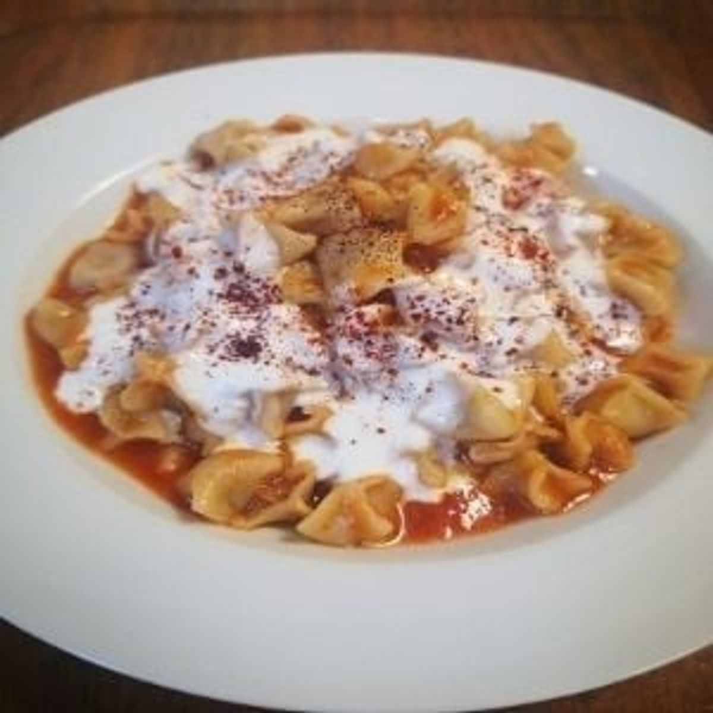
Kayseri Mantısı
Zahmetle hazırlanan, minik hamurların kıyma ile buluştuğu efsane tat.
Açılış: uyanınca · Kapanış: usanınca (genelde 09:00 – 21:30)
Geleneksel Anadolu mutfağı
Ankara Bahçelievler'de, günlük taze malzemelerle hazırladığımız ev yapımı tatlar.
03 · Sıcak servis
İç harcı bol, dışı altın sarısı.
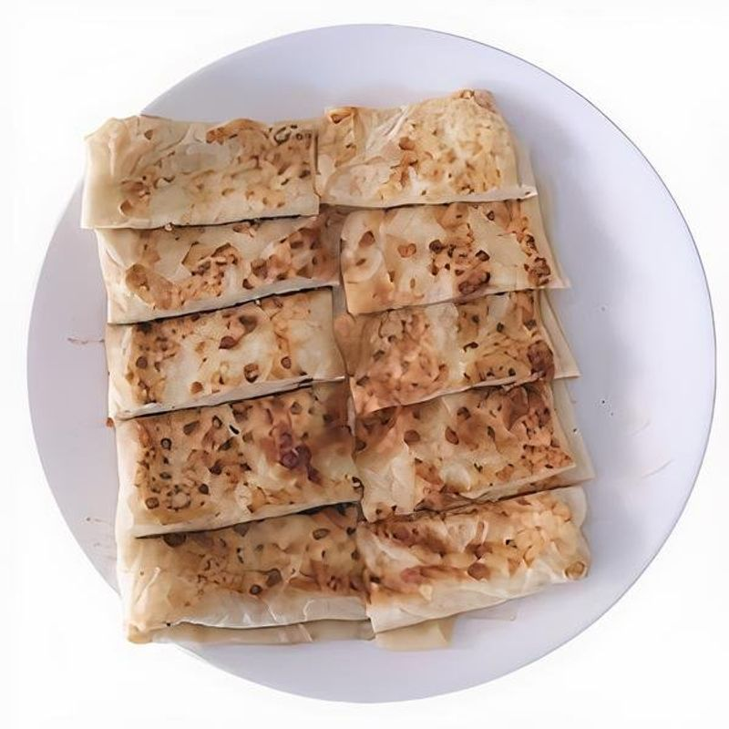

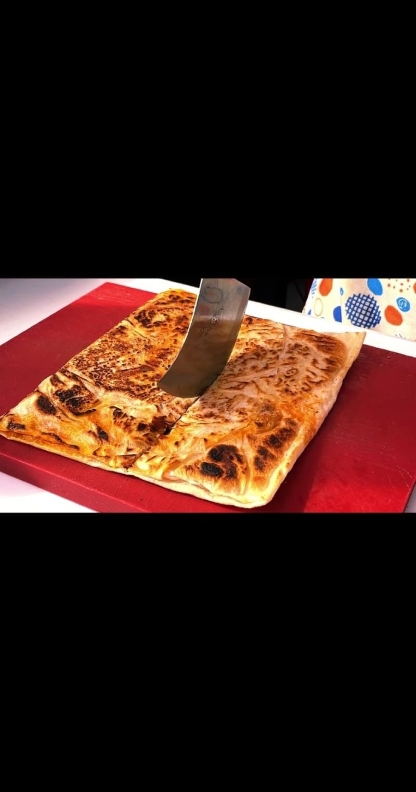


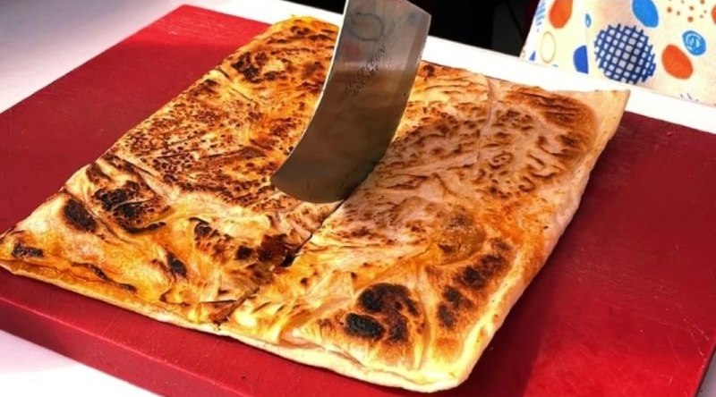
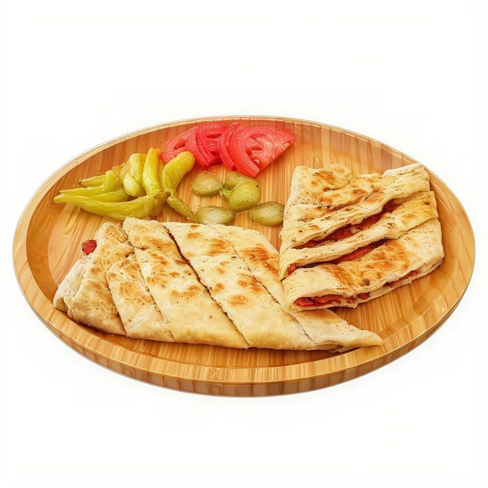
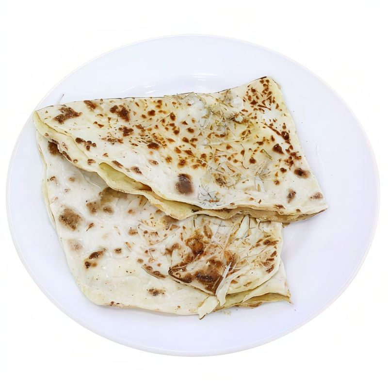
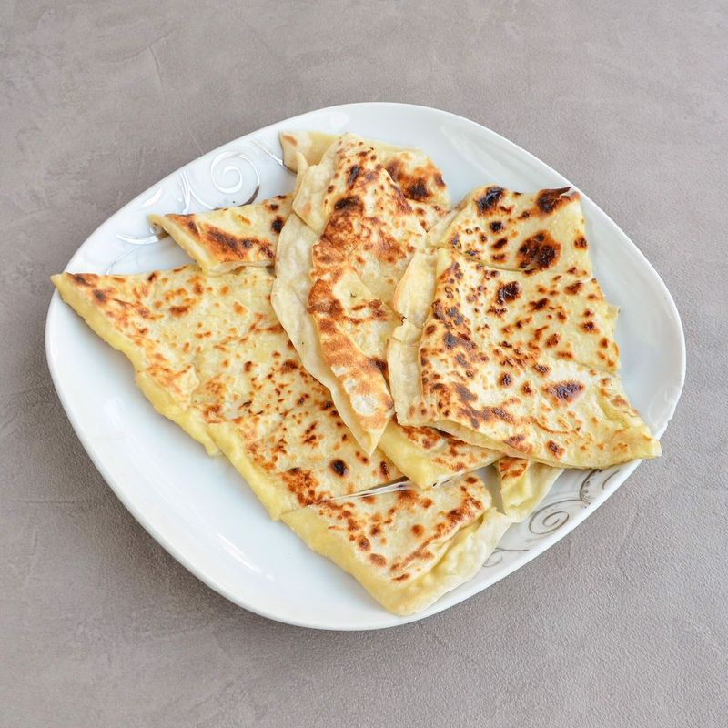

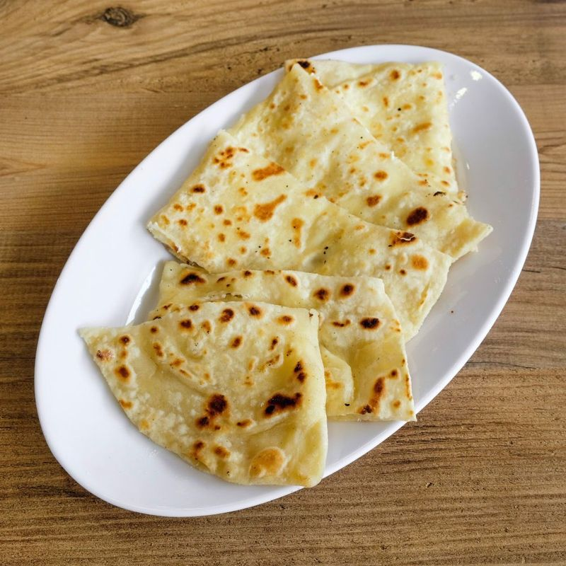
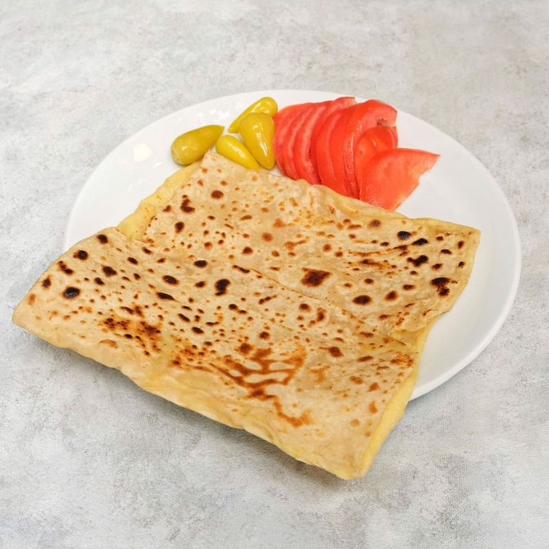
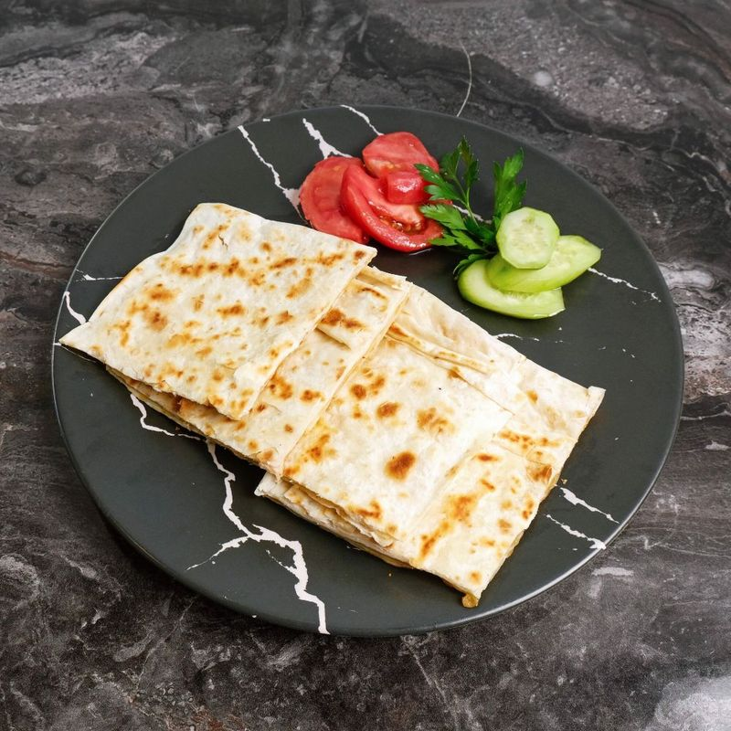
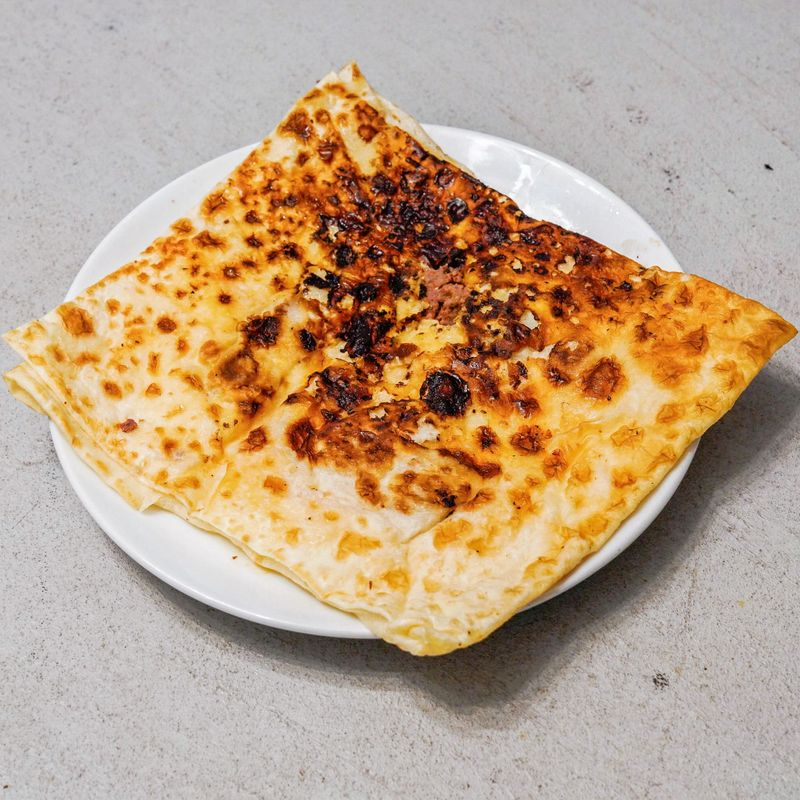
Yemeksepeti veya Migros Yemek üzerinden sipariş verebilir, ya da dükkânımıza uğrayabilirsiniz.